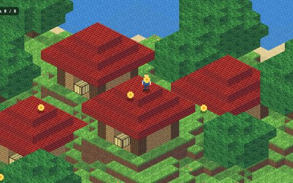
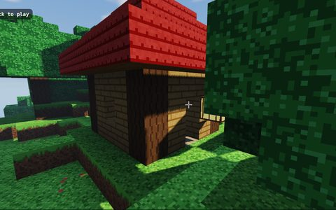
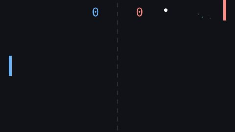
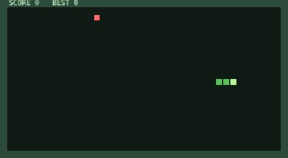
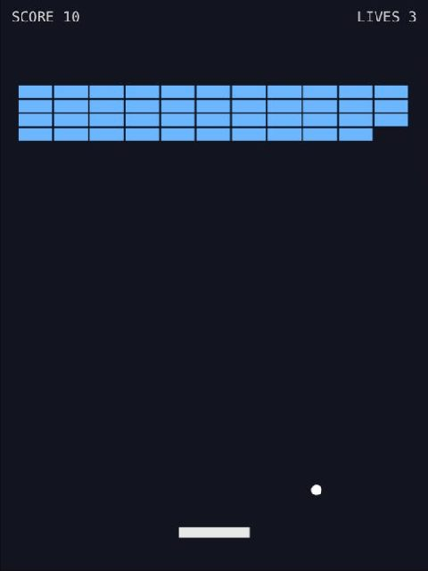
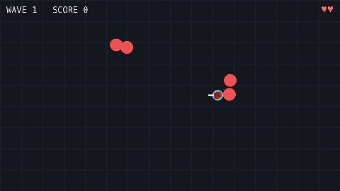
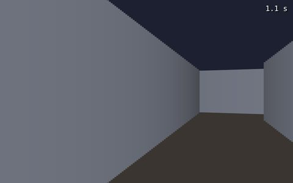

One world, five views
Collect coins on an island and switch between 2D, isometric, raycaster and 3D while you play.
2d2.5d3d
Samples
Each sample is one folder with one main.js you can read top to bottom, plus a README that says what it teaches. Copy one to start your own game.
Start with Hello: the smallest page that loads the engine.
Block worlds drawn by the new engine, in every view.

Collect coins on an island and switch between 2D, isometric, raycaster and 3D while you play.

Classic arcade games, each a single main.js you can read top to bottom.






From one cube to a full third-person platformer.


